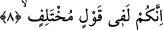
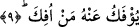

8. Siz çelişkili sözler söylüyorsunuz.
Ey Mekke ahâlisi! Siz Kur’an ve Hz. Muhammed hakkında birbirinden farklı ve zıt
sözler söylüyorsunuz. Meselâ Kur’an hakkında “o şiir, sihir ve geçmişlerin
masallarıdır”; Hz. Muhammed (s.a.) hakkında “o şâir, büyücü, uydurmacı ve delidir”
diyorsunuz. Bir taraftan kıyâmetin vâki olacağına inanıyor, diğer taraftan inanmayıp:
“Biz onun hakkında ancak bir zan ve şüphe içindeyiz” diyor, tam bir şaşkınlık ve kesin
bir cehâlet içinde bulunuyorsunuz.
Bu cevapta, Dahhâk’tan yapılan bir rivâyetin de işâret ettiği gibi, önceki âyette geçen
“hubük” kelimesinin istivâ; yâni “düzgün, güzel hilkatli” anlamının te’yidi
bulunmaktadır. Zira Dahhâk şöyle demiştir: “Şüphesiz kâfirlerin sözü müstevî, yâni
“düzgün, hem fikir hâlinde” değildir. Onların sözleri birbirini tutmaz ve birbirine
zıddır.”
Ben de diyorum ki: Bu kısımda vurgulanmak istenen husus, Kur’ân-ı Kerim’in
semâdan inmiş olması ve peygamberliğin semâvi bir görev olması hasebiyle kâfirlerin
bunda bir kanâat birliği içinde bulunamayıp, nübüvvetin semâvî değil de dünya ile
alakalı bir iş olduğunu sanmaları olabilir. Halbuki gerçek böyle değildir. Ayrıca bu
âyetin bir de işârî yönü vardır. Şöyle ki: Kalp semâsında Allah’a giden bir yol vardır.
Ey tâlib-i sâdıklar! Sizler talep husûsunda farklı şeyler söylüyorsunuz. Kiminiz naîm
cennetlerindeki derecelerimizi, kiminiz yanımızdaki kurbiyet kemâlatını, kiminiz
katımızdaki ulûm ve meârifi, kiminiz de bütün sıfatları istiyor. Şunu bilin ki, kim doğru
yol üzerinde istikâmet üzere yürür ve sâdece O’nu istemede ısrar ederse şüphesiz her
tâlib maksûduna ulaşır.
9. Ondan (Kur’an’dan veya îmandan) dönen döndürülür (engellenmez).
Kamus’ta belirtildiğine göre “efk” ifâdesi, “insanı bir şeyden alıkoymak, çevirmek,
görüşünden vazgeçirmek” anlamındadır.
Müfredât’da da yer aldığına göre “racul me’fûk”, “haktan bâtıla çevrilen kimse”
anlamındadır. Yâni Kur’an’dan ve Rasûlullah (s.a.)’den saptırılan kimse öyle bir
saptırılır ki hiçbir saptırma bunun kadar çirkin ve kuvvetli değildir. Çünkü o bile
kendisini “saptırılmış” kabul etmez. Yâni burada saptırma kelimesinin masdar anlamı
hakikat için kullanılmış ve umûm kasdedilmiştir. O halde buranın mânâsının takdiri
şöyle olur: Kur’an ve Hz. Muhammed ile ilgili çelişkili sözlerden gerçek mânâda
dönmeyi arzulayanlar döner, doğruyu söyler ve ona yapışırlar. Bu hakikatle muttasıf
olmayanlar da ondan vazgeçmez, birbiriyle çelişki içinde bulunan sözlerine devam eder